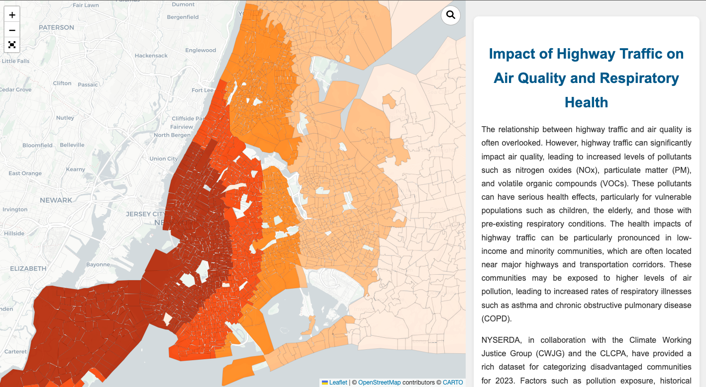
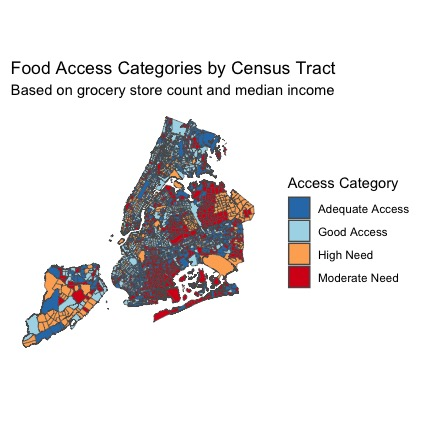
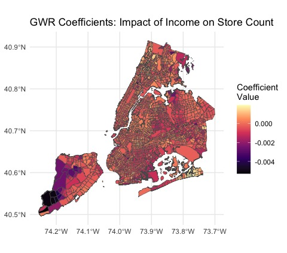
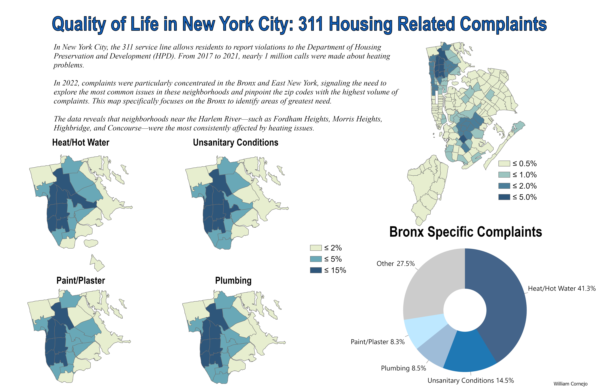

Maps
NYC Web Map
Mapping Asthma and COPD rates in New York City area
The relationship between highway traffic and air quality is often overlooked. However, highway traffic can significantly impact air quality, leading to increased levels of pollutants such as nitrogen oxides (NOx), particulate matter (PM), and volatile organic compounds (VOCs). These pollutants can have serious health effects, particularly for vulnerable populations such as children, the elderly, and those with pre-existing respiratory conditions. The health impacts of highway traffic can be particularly pronounced in low-income and minority communities, which are often located near major highways and transportation corridors. These communities may be exposed to higher levels of air pollution, leading to increased rates of respiratory illnesses such as asthma and chronic obstructive pulmonary disease (COPD). This web map allows for users to see the spatial relationships between car density, pollutants, and environmental effects.
Link -> https://wmcornejo.github.io/nys_webmap/

Tools: Leaflet, Javascript, html, css
Key Features:
- Six related layers available to toggle.
- Filtering toggles for PM2.5 and Benzene.
- Search functionality for census tracts.
Phish Concert Analysis
Visualizing Phish concert trends over the years
Phish, one of America’s most iconic Rock bands, is known for their creative and improvisational concerts. Here in NYC, every year during Christmas, tons of tickets sell out for Phish’s 5 day shows at Madison Square Garden. During the early 1990s, the band gained a ton of popularity. This report analyzes Phish’s concert locations during 1990-92, when the band began touring nationally. Using web-scraped data from https://phish.com/tours/, along with spatial techniques in R, I delivered maps showing concert count by state, identified top venues, and tracked tour expansion over the three-year timespan.
Link -> https://wmcornejo.github.io/phish/
Tools: Leaflet, Javascript, html, css
Key Features:
- Toggle through years.
- Get statistics by State (tbd).
- Search functionality for venues (tbd).
NYC Food Access Analysis
Grocery Store & Deli Distribution
New York City, one of the most populous urban centers in the world, is home to a diverse and bustling population. With so many people constantly on the move—commuting to work, school, —the availability of food sources is essential. With this analysis, I aim to identify food deserts by examining the interplay between poverty rates, median income, and the availability of grocery stores. This project will assess the quality of food resources based on the presence and density of delis and grocery stores. While fast food restaurants are a popular choice for many, delis provide a more affordable and often quicker alternative, offering freshly made meals at lower prices than major fast-food chains. Grocery stores serve as the backbone of food access, supplying residents with everything they need for their weekly meals.


Tools: R, sf
Key Features:
- Identified “food deserts” where the scope is solely grocery stores and delis. Their distribution is related to the poverty rate and median income per MODZCTA
Mapping Phish Concerts from 1990-92
Bronx Housing Conditions
311 Call Spatial Analysis
Mapped and analyzed 311 complaint patterns related to housing maintenance issues across Bronx Community Districts.

Tools: ArcGIS Pro
Key Features:
- Small multiple choropleth maps
- Highlights top housing complaints in the Bronx